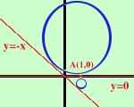

|
Trovare l'equazione della circonferenza passante per il punto A(1,0) e tangente alle rette y = 0 y = -x E' difficile incontrare un problema del genere per le difficolta' di calcolo che si incontrano: infatti la tangenza ad una retta si traduce in una condizione di secondo grado, quindi l'equazione risolvente sara' generalmente di quarto grado, noi facciamo un caso particolare Prendo l'equazione generica della circonferenza x2+ y2 + ax + by + c = 0
a2 - 4c = 0 a2 + b2 - 2ab - 8c = 0 Ricavo c dalla prima equazione e sostituisco nelle altre a2 - 4(-1 -a) = 0 b2 - 2ab - 4(-1 -a) = 0 a2 + 4 + 4a = 0 b2 - 2ab + 4 + 4a = 0 Il primo termine della seconda equazione e' un quadrato (a + 2)2 = 0 b2 - 2ab + 4 + 4a = 0 Risolvo la seconda equazione a = -2 b2 - 2ab + 4 + 4a = 0 Sostituisco il valore di a trovato nella prima e nella terza equazione a = -2 b2 + 4b + 4 - 8 = 0 a = -2 b2 + 4b - 4 = 0 Risolvo la terza equazione del sistema con la formula per le equazioni di secondo grado a = -2 b1,2 = -2 Ho usato la formula ridotta a = -2 b1,2 = -2 estraggo di radice a = -2 b1,2 = -2 ottengo due soluzioni (significa che due circonferenze diverse soddisfano le condizioni richieste)
Le equazioni delle due circonferenze sono x2+ y2 -2x +(-2+2  x2+ y2 -2x +(-2-2 cioe' x2+ y2 -2x -(2-2 x2+ y2 -2x -(2+2 |